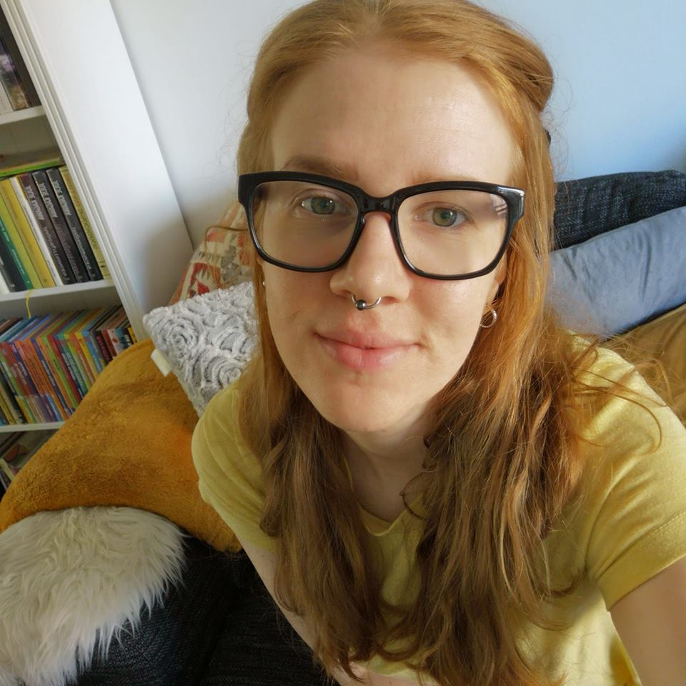

Min me-sida
Jag heter Sanna Fielding och är 27år gammal. Jag bor i Trelleborg, där jag delvis växt upp, med min man Tim, vår son Marlon och hund Khaleesi. Vi har bott här i 1,5år nu, innan dess bodde vi i Karlskrona. Jag flyttade till Karlskrona 2011 för att plugga spelprogrammering på BTH, det gjorde även Tim och det var så vi träffades. Spelprogrammering var inte helt rätt för mig, så efter två år bestämde jag mig för att jobba och plugga lite annat i hopp om att hitta rätt. Jag hade aldrig väntat mig att jag tillsist skulle komma tillbaka till programmering på BTH, men här är jag nu och det känns väldigt bra!
Jag och Tim var vänner i några år innan vi tillsist blev ett par. Nu har vi varit tillsammans i snart 6år. I april 2018 födde jag vår son Marlon och vi valde då att flytta närmare familjen, och lämna studentkompisarna i Blekinge. Det kändes inte helt rätt att hänga på Rotundan med en bebis. Det var ett väldigt bra val och vi trivs väldigt bra i Skåne. Vi åker fortfarande tillbaka till Karlskrona för de större eventen, som våra respektive föreningars årsevent. Vi gifte oss i oktober 2018, som en överraskning för familj och vänner på Marlons namngivning. Nu väntar vi vårt andra barn i februari 2020, som med vår tur kommer att födas på skottdagen.
Jag har alltid varit intresserad av dator- och TV-spel. I min familj spelar vi väldigt mycket tillsammans, så det var givet att även jag skulle bli spelintresserad. Däremot visste jag ingenting om programmering innan gymnasiet. Jag läste naturvetenskapliga linjen och skulle välja inriktning inför andra året. Vi fick välja natur eller matematik/data. Jag var väldigt matematikintresserad och då kom data och programmering på köpet. Det är jag väldigt glad över och blev den enda på min skola som läste alla tre erbjudna programmeringskurser. När jag inte sitter framför datorn så har jag ett barn och en hund som uppehåller mig. Men annars har det varit hästar och ridsport som varit mitt största intresse, det är dock inte så bra att kombinera med graviditet. Jag handarbetar också mycket - stickning, virkning, broderi och sömnad. Vad som helst som håller händerna sysselsatta.